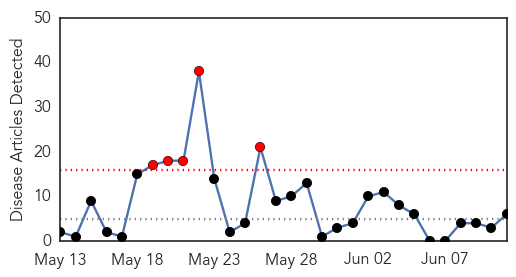
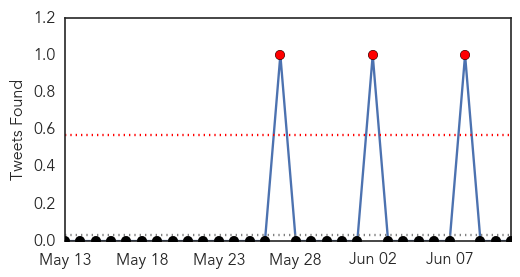
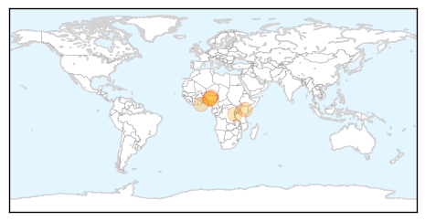
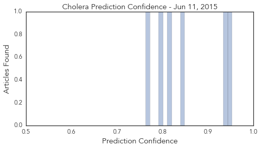
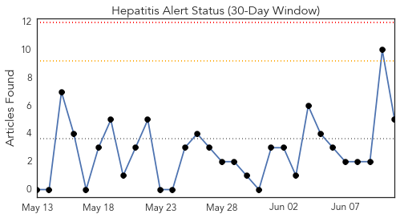
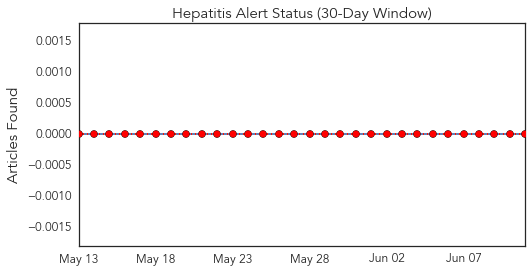
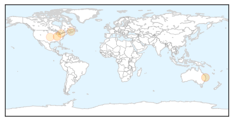

Cholera
30-Day Web Trend
5 alerts, 0 warnings

30-Day Twitter Trend
3 alerts, 0 warnings

Article Locations
Article Confidences
Top Articles:
- 0.953
- Cholera claims 500 in 5 months in Nigeria
- 0.935
- Cholera claims 500 in five months in Nigeria -UNICEF
- 0.848
- Unbound Enlists Moms In The Battle Against Cholera Outbreak In Kenya
- 0.812
- Nigeria: Epidemic (Cholera) Emergency Plan of Action operation update n° 1 (MDRNG020) - Nigeria
- 0.793
- Protecting refugees and host families from cholera - Democratic Republic of the Congo
- 0.763
- Cholera case confirmed in Adabraka following flood disaster
Top Tweets:
-
No tweets found for Jun 11, 2015
Hepatitis
30-Day Web Trend
0 alerts, 0 warnings

30-Day Twitter Trend
0 alerts, 0 warnings

Article Locations
Article Confidences

Top Articles:
- 0.792
- Tracking food poisoning outbreaks with genomic sequencing
- 0.774
- HIV outbreak's source remains elusive
- 0.623
- Online comments show support for HPV vaccine but misperceptions too
- 0.618
- Online comments show support for HPV vaccine but misperceptions too
- 0.527
- Novartis gains FDA approval for Promacta® providing new option for children, ages 6 and older, with chronic ITP, a rare blood disorder
Top Tweets:
-
No tweets found for Jun 11, 2015